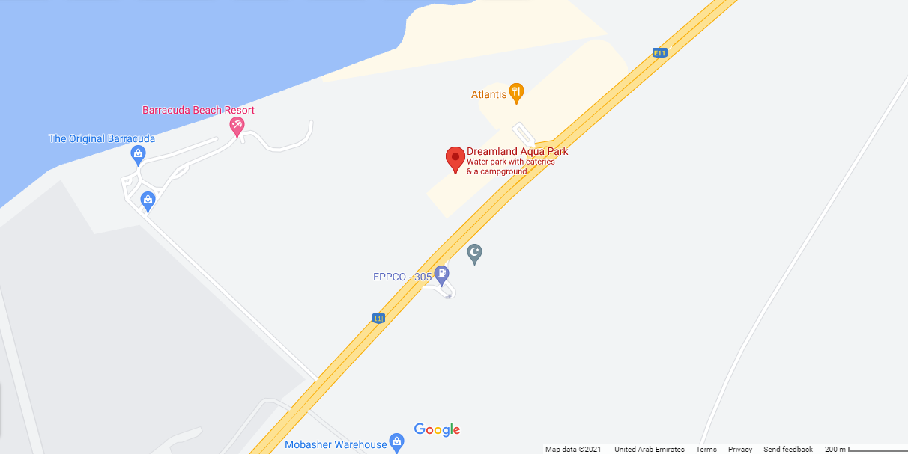
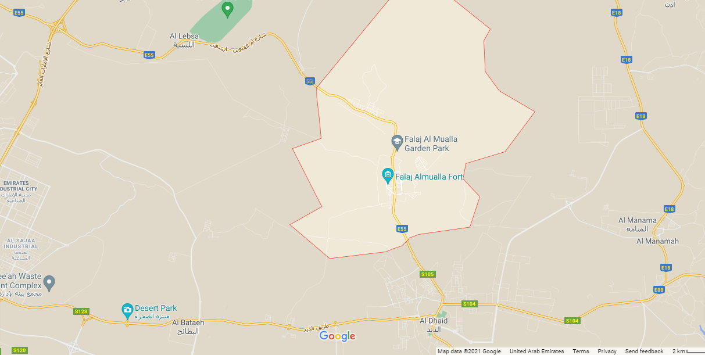
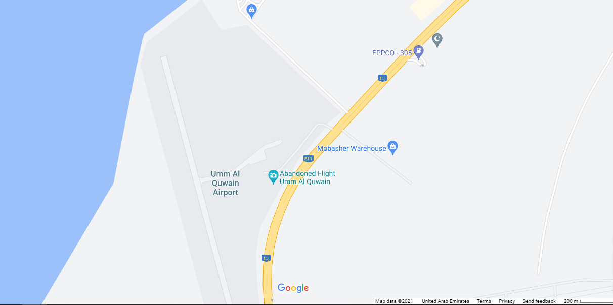

Welcome to Umm Al Quwain

Dreamland waterpark
Falaj Al Mualla
Dreamland aqua park is the largest family waterpark in the region with an area of more than 250,000 square metres. It's located on the picturesque coastline of Umm al-Quwain and its position makes it more accessible to tourists coming from the other Emirates.
Located just 30kms off the centre of Umm Al Quwain city, Falaj Al Mualla is an old town built in the 19th century that is most well known for its four iconic attractions, the fort and the three watchtowers. The fort was built in 1825.
Abandoned IL-76 is a Russian cargoplane that was left abandoned and rusting away since probably the 1970s at a non-functional airstrip in Umm al-Quwain.
